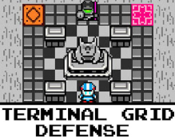
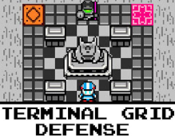

Santana Electric Snakes
Santana Electric Snakes is a colored pencil art piece I created back in 2010.

Terminal Grid
Terminal Grid Defense is a mini game I built using a Gamemaker Studios 2.
Santana Electric Snakes is a colored pencil art piece I created back in 2010.
Terminal Grid Defense is a mini game I built using a Gamemaker Studios 2.
